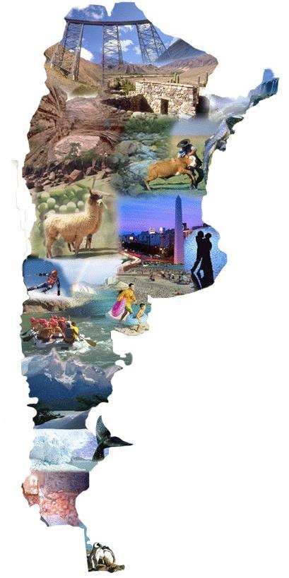

Argentina es un país con una gran diversidad de paisajes y culturas, lo que lo convierte en un destino
turístico ideal para todo tipo de viajeros. En este relato, te contaré por qué deberías visitar Jujuy,
Misiones, Mendoza y Bariloche, cuatro provincias que ofrecen una experiencia única y memorable.
Jujuy: la tierra de los colores
Jujuy es una provincia del norte argentino conocida por sus paisajes coloridos. Aquí podrás visitar el
Parque Nacional Los Cardones, donde podrás admirar las formaciones rocosas de colores rojo, rosa y naranja.
También puedes visitar la Quebrada de Humahuaca, una serie de valles y montañas que albergan algunos de los
paisajes más impresionantes de Argentina.
Misiones: la tierra de la selva
Misiones es una provincia del noreste argentino que se encuentra en la frontera con Brasil y Paraguay. Aquí
podrás visitar el Parque Nacional Iguazú, hogar de las Cataratas del Iguazú, una de las maravillas naturales
del mundo. También puedes visitar el Parque Nacional Iguazú del lado brasileño, donde podrás disfrutar de
una vista diferente de las cataratas.
Mendoza: la tierra del vino
Mendoza es una provincia del oeste argentino conocida por su producción de vino. Aquí podrás visitar las
bodegas de Mendoza, donde podrás aprender sobre el proceso de elaboración del vino y degustar sus deliciosos
productos. También puedes practicar deportes al aire libre, como el senderismo, el ciclismo y el montañismo.
Bariloche: la tierra de los lagos
Bariloche es una ciudad ubicada en la Patagonia argentina. Es un destino popular para los amantes de la
naturaleza, ya que ofrece una gran variedad de actividades al aire libre, como el esquí, el snowboard, el
senderismo, el rafting y el kayak. También puedes visitar el Parque Nacional Nahuel Huapi, donde podrás
disfrutar de la belleza natural de la Patagonia.
Corrientes
es una provincia rica en historia, cultura y naturaleza. Es conocida por sus Esteros del Iberá,
un vasto humedal que alberga una gran diversidad de flora y fauna. También es un destino popular para la
pesca deportiva, el turismo rural y el carnaval.
Se encuentra ubicada en el noreste del país, limitando con las provincias de Misiones, Entre Ríos, Santa Fe,
Chaco y Formosa. Su capital es la ciudad de Corrientes.
Salta
es una provincia rica en historia, cultura y naturaleza. Es conocida por sus paisajes montañosos, sus
pueblos coloniales y su gastronomía.
Se encuentra ubicada en el noroeste del país, limitando con las provincias de Jujuy, Tucumán, Catamarca, La
Rioja y Córdoba. Su capital es la ciudad de Salta.
Conclusiones
Jujuy, Misiones, Mendoza, Bariloche, Corrientes y Salta son provincias argentinas que ofrecen una
experiencia única y
memorable. Si estás buscando un destino turístico que te ofrezca una combinación de belleza natural, cultura
y actividades al aire libre, estas provincias son la opción perfecta.